bkqczr.xyz est mis à disposition selon les termes de la licence Creative Commons Attribution - Pas d'Utilisation Commerciale - Pas de Modification 4.0 International.
bkqczr.xyz est mis à disposition selon les termes de la licence Creative Commons Attribution - Pas d'Utilisation Commerciale - Pas de Modification 4.0 International.
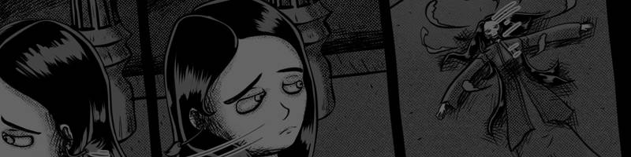
« Mais... moi... Je voulais être importante... »
« Mais... moi... Je voulais être importante... »
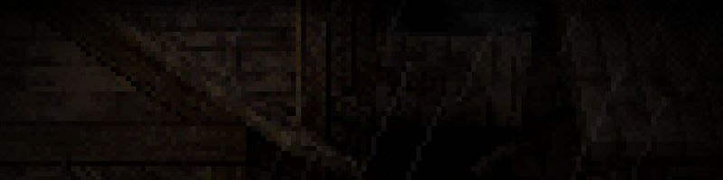
« Oh Freya... Ton frère est revenu. Il est dans la cabane, à l'extérieur du village, encore avec ces bandits. Je t'en prie, ne va pas le voir. Tu sais ce qu'il aime te faire... »
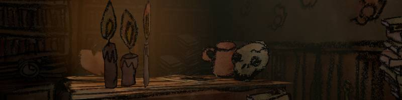
« Eh bien, Blanche... Je suis soulagé de te voir ici. Quand nous t'avions retrouvé à Launderley, devant la pile des vingt-neuf corps, tu étais comme hébétée... »
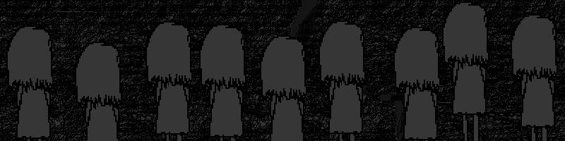
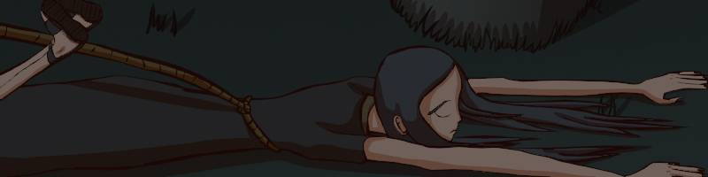
« Et je régénérerai le monde de la ruine. »
L'ennui, la fatigue et la colère terminent de me consumer. Le peu d'énergie qu'il me reste sera investi dans cette ultime réorganisation de mes notes.
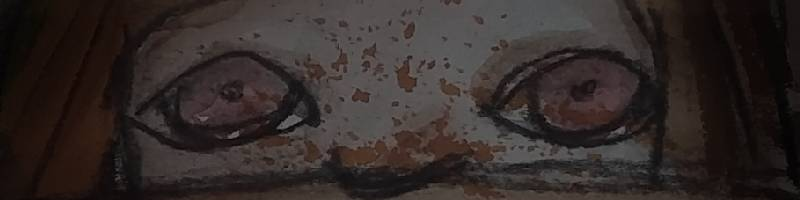
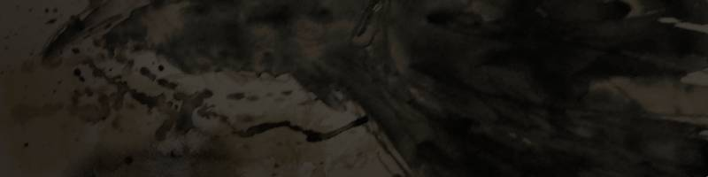
Elle souleva un battant pour passer de l'autre côté, et seulement à l'approche de la porte d'entrée elle eut la certitude de n'avoir pas imaginé que l'on y toquait.
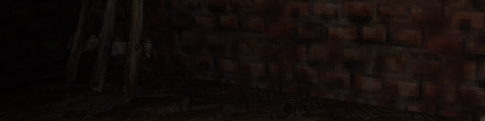
Ces mains flétries, pareilles que celle d'un mort, sans trop de chair pour cacher assez de muscles, portaient une lanterne d'apparence robuste, tendue et sans le moindre tremblement.
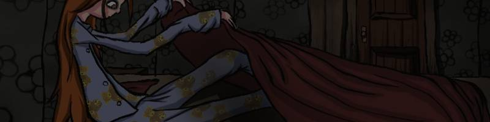
« Pour certains dont l'esprit est... compliqué... »
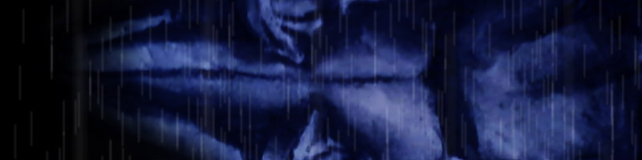
L'homme souleva lentement son chapeau à plume et le posa à ses côtés avec lenteur et délicatesse, comme s'il s'était agit, avec prudence, de n'éveiller aucun des spectres plats tapis dans la ferraille du bus.
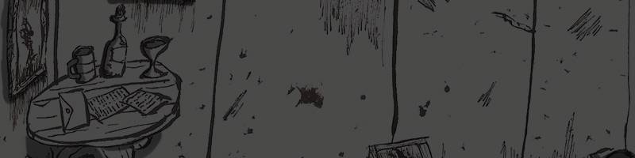
« Tu es une beauté funeste, c'est rare et dangereux, et nous aimons, plus ou moins consciemment, à te contempler ainsi, comme une oeuvre d'art unique et précieuse. Et moi je ne suis pas une inconsciente. Je te veux misérable, poupée. Je te veux misérable parce que tu es belle ainsi. »
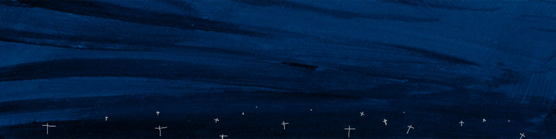
J'ai cessé de prendre le temps de construire sitôt que le temps, dans ce qu'il avait de conséquent, s'est dissolu en un concept insignifiant.
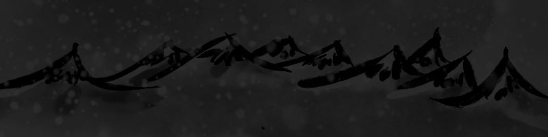
Devant vous, le froid blanc s'épaissit. Vous le savez : Au-delà, il n'y a rien que la mort, l'endormissement et la mort, l'inconscience et la mort.
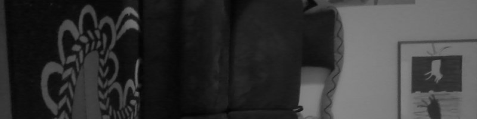
Il faudrait que je puisse allouer une partie de mon cerveau à ta personnalité et me la verrouiller à jamais ; alors, les choses seraient parfaites.
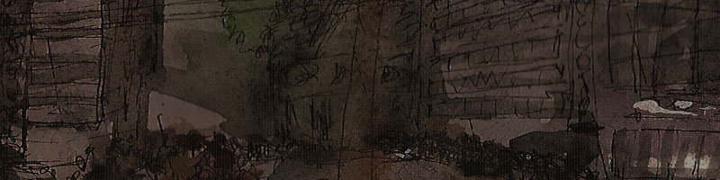
Si vous aviez pu me voir, vous auriez crains comme la pleurnicheuse que je suis est forte. Le diable aussi m'a-t-il crainte lorsqu'il a su que j'arrivais à lui en plongeant une lame dans la chair molle ?
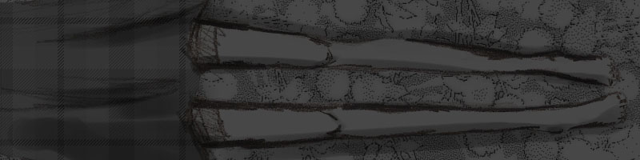
D'entre deux arbres, la silhouette dégingandée d'un homme commençait à se dessiner, quoi que si peu mobile qu'un non averti l'aurait encore longtemps prise pour une coïncidence des ombres.
bkqczr.xyz est mis à disposition selon les termes de la licence Creative Commons Attribution - Pas d'Utilisation Commerciale - Pas de Modification 4.0 International.